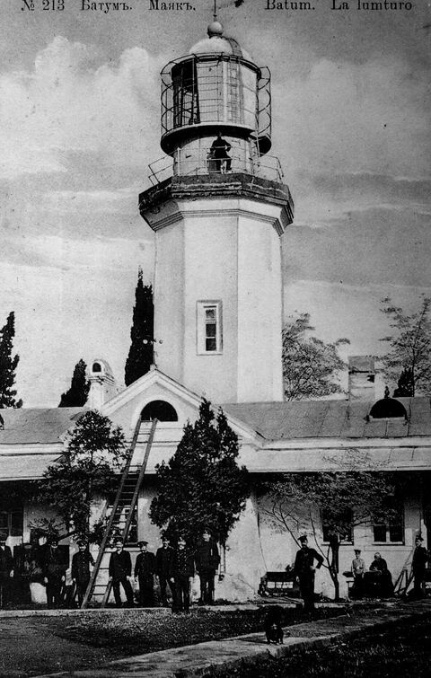

Цвима
წვიმა
Батумская пекарня имени дождя
Цвима по-грузински значит «дождь». Печём аджарули, хлеб и пахлаву в дровяной печи на улице Мемеда Абашидзе в Старом Батуми, каждый день с 8 до 21.
Как дойтиЦвима значит «дождь»
В Батуми за год выпадает около 2 500 мм дождя, почти впятеро больше, чем в Тбилиси. Дождливых дней в году 139.
Причину видно из окна. Влажный воздух с моря упирается в горы Аджарии сразу за городом и проливается на бульвар, порт и наши крыши.
Тот же дождь растит чай в Чакви, мандарины в садах и траву на горных пастбищах, откуда к нам приходят сыр и масло.
Поэтому пекарню мы назвали так, как здесь чаще всего называют погоду. Печь горячая в любой день, и у окна всегда найдётся место.
Сентябрь: 330 мм, самый дождливый месяц
| Месяц | Осадки, мм | Дней с дождём |
|---|---|---|
| Январь | 235 | 14 |
| Февраль | 183 | 13 |
| Март | 157 | 13 |
| Апрель | 90 | 10 |
| Май | 93 | 10 |
| Июнь | 141 | 10 |
| Июль | 165 | 10 |
| Август | 221 | 12 |
| Сентябрь | 330 | 11 |
| Октябрь | 322 | 12 |
| Ноябрь | 306 | 12 |
| Декабрь | 278 | 13 |
Если пошёл дождь
Аджарули не носят с собой: его едят горячим, пока желток жидкий и сыр тянется. Для этого у окна стоит длинный стол. Пока над Батуми дождь, кофе по-батумски к аджарули за наш счёт.
Цвима. Чек на дождь
Как вошли
- Зонт в стойку, место у окна1 мин
- Аджарули в дровяной печи12 мин
- Кофе на горячем песке, пока печётся(4 мин)
Когда принесли
- Вмешать желток и масло в сыр1 мин
- Отрывать края лодки и макать10 мин
- Доесть дно, оно самое мягкое3 мин
Когда дождь кончился
- До бульвара пешком5 мин
Сыты, сухи и у моря32 мин
По легенде, аджарули придумали лазы-лодочники: лодка из теста, а в ней солнце, которое садится в море.
Улица десяти имён
Мы стоим на улице Мемеда Абашидзе, главной улице Старого Батуми с начала XX века. С каждой новой властью город давал ей новое имя:
- Рум Сохас
- Нурие Сохас
- Султан Селим
- Мариинская
- Коминтерна
- III Интернационала
- Красной армии
- Сталина
- Октябрьская
- Свободы

Теперь она названа в честь Мемеда Абашидзе, батумского писателя и общественного деятеля (1873–1937). На плане 1913 года это ещё Мариинский проспект, а бульвар у моря зовётся Бульваром Цесаревича. От нашей двери до него пять минут.
Имён у улицы было десять. У здешней погоды одно — цвима.
Как дойти
Заходите переждать дождь. Или просто так, к горячему аджарули.
- С бульвара От Приморского бульвара пять минут пешком вглубь Старого Батуми.
- По улице Улица Мемеда Абашидзе, на плане 1913 года Мариинский проспект. Дом 23.
- У двери Навес в шоколадную и белую полоску. Зонт оставьте в стойке у входа.
Мемеда Абашидзе, 23
+995 XXX XX XX XX
Старый Батуми, Грузия
Каждый день 8:00–21:00
hello@tsvima.example
Instagram